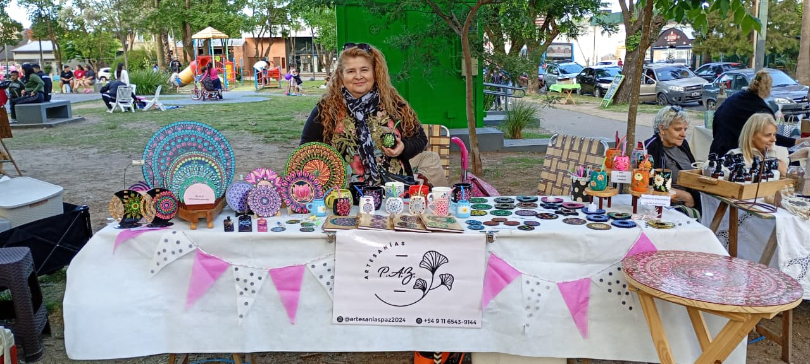

En el Paseo Artesanal Mármol encontrarás una amplia variedad de rubros
artesanales. Todos nuestros productos son de producción propia,
elaborados con dedicación y pasión por artesanos de nuestra comunidad
local.
Gastronomía
Pastelería
Comida casera
Productos Gourmet
Conservas - Mermeladas
Blended - Mezclas de yuyos para el mate o té
Textiles y Tejidos
Tejidos
Amigurumis
Textil cartucheras
Textil almohadones
Ropa interior
Macramé

Decoración y Arte
Cuadros
Puntillismo
Mosaquismo
Pirograbados
Decoupage
Vitrofusión apliques en vidrio
Bijouterie y Accesorios
Bijouterie
Marroquinería
Sublimados
Papelería Creativa
Cuadernos artesanales
Artesanías y Cerámica
Cerámica
Porcelana fría
Macetas artesanales
Objetos de madera
Artículos de hierro para el jardín
Bienestar y Aromas
Velas artesanales
Jabones artesanales
Sahumerios artesanales
Difusores - Perfumería
Juguetes y Muñecos
Muñequería
Juguetes artesanales
Jardín y Mascotas
Vivero plantas cactáceas suculentas
Accesorios para Mascotas